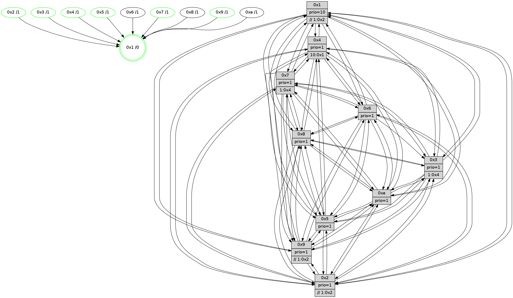

>> << IDX [start] -100 -25 -5 +0 +5 +25 +100 [820.084820032]
 Previous packets
----------------------------------------------------------------------
815.356028 beacon01(faad) #0 coord=01,02,03,04,05,06,07,0a,09,08 cycle=688.0ms assoc
-- color-indic=1 64 da dd
815.366011 beacon02(faad) #0 coord=01,02,03,04,05,06,07,0a,09,08 cycle=688.0ms assoc 64 49 ec
815.376011 beacon03(faad) #0 coord=01,02,03,04,05,06,07,0a,09,08 cycle=688.0ms assoc 64 33 a1
815.386011 beacon04(faad) #0 coord=01,02,03,04,05,06,07,0a,09,08 cycle=688.0ms assoc 64 44 4b
815.396010 beacon05(faad) #0 coord=01,02,03,04,05,06,07,0a,09,08 cycle=688.0ms assoc 64 3e 06
815.406011 beacon06(faad) #0 coord=01,02,03,04,05,06,07,0a,09,08 cycle=688.0ms assoc 64 b0 d1
815.416011 beacon07(faad) #0 coord=01,02,03,04,05,06,07,0a,09,08 cycle=688.0ms assoc 64 ca 9c
815.426015 beacon0a(faad) #0 coord=01,02,03,04,05,06,07,0a,09,08 cycle=688.0ms assoc 64 bb 97
815.446017 beacon08(faad) #0 coord=01,02,03,04,05,06,07,0a,09,08 cycle=688.0ms assoc 64 4f 0d
815.457472 [Hello(6): seq=522 sym=2,3,5,4,7,9,8,10,1 sysInfo= stat=2:10,11,8,7/3:10,6,0,7/5:4,6,2,11/4:5,11,12,0/7:14,2,14,3/9:8,8,2,0/8:4,8,14,7/10:4,0,5,7/1:7,5,5,1]
815.460255 [Hello(3): seq=522 sym=1,7,6,2,4,8,9,10,5 sysInfo= stat=1:2,7,13,0/7:4,2,11,5/6:10,11,8,8/2:2,6,14,8/4:13,4,8,5/8:9,3,11,4/9:1,11,15,7/10:3,3,13,7/5:11,6,11,9]
815.462982 [Color(7) seq=141 @0:0 prio=1 >1.@4,1.@6]
815.464576 [Hello(2): seq=518 sym=4,5,7,6,3,9,8,10,1 sysInfo=hasWarning stat=4:13,5,11,4/5:5,6,11,3/7:10,3,3,7/6:14,11,15,6/3:10,12,9,4/9:6,12,12,0/8:6,4,9,6/10:15,10,10,6/1:11,4,6,1]
815.468223 [Hello(5): seq=522 sym=7,6,4,3,1,9,8,10,2 sysInfo=hasWarning stat=7:8,4,3,6/6:3,8,1,7/4:4,9,5,5/3:13,6,8,7/1:12,6,11,1/9:13,13,13,0/8:2,0,10,6/10:4,7,6,1/2:3,9,3,0]
815.471033 [Color(5) seq=175 @0:0 prio=1]
815.472321 [Color(2) seq=167 @0:0 prio=1 >>1.@2,1.@3,1.@5]
815.475100 [Color(4) seq=140 @0:0 prio=1 >10.@1,1.@2,1.@3,1.@6]
815.477654 [Hello(1): seq=431 sym=4,2,9,5,10,3,8,6,7 sysInfo=coloring-mode-on,ColoringModeRequestCalled stat=4:7,8,1,0/2:3,10,10,9/9:5,0,14,1/5:4,7,4,3/10:15,9,8,8/3:0,11,7,0/8:11,9,9,8/6:1,3,9,7/7:10,15,0,11]
----------------------------------------------------------------------
816.144160 beacon01(faad) #0 coord=01,02,03,04,05,06,07,0a,09,08 cycle=688.0ms assoc
-- color-indic=1 64 66 d8
816.154143 beacon02(faad) #0 coord=01,02,03,04,05,06,07,0a,09,08 cycle=688.0ms assoc 64 f5 e9
816.164143 beacon03(faad) #0 coord=01,02,03,04,05,06,07,0a,09,08 cycle=688.0ms assoc 64 8f a4
816.174144 beacon04(faad) #0 coord=01,02,03,04,05,06,07,0a,09,08 cycle=688.0ms assoc 64 f8 4e
816.184143 beacon05(faad) #0 coord=01,02,03,04,05,06,07,0a,09,08 cycle=688.0ms assoc 64 82 03
816.194145 beacon06(faad) #0 coord=01,02,03,04,05,06,07,0a,09,08 cycle=688.0ms assoc 64 0c d4
816.204145 beacon07(faad) #0 coord=01,02,03,04,05,06,07,0a,09,08 cycle=688.0ms assoc 64 76 99
816.214148 beacon0a(faad) #0 coord=01,02,03,04,05,06,07,0a,09,08 cycle=688.0ms assoc 64 07 92
816.224148 beacon09(faad) #0 coord=01,02,03,04,05,06,07,0a,09,08 cycle=688.0ms assoc 64 89 45
816.234148 beacon08(faad) #0 coord=01,02,03,04,05,06,07,0a,09,08 cycle=688.0ms assoc 64 f3 08
816.246923 [Hello(10): seq=455 sym=6,2,3,8,9,5,7,4,1 sysInfo=hasWarning stat=6:5,9,0,3/2:14,7,11,2/3:5,7,9,6/8:14,4,12,8/9:5,7,1,0/5:0,11,1,11/7:8,8,1,5/4:11,0,7,6/1:12,8,10,1]
816.249931 [Hello(8): seq=466 sym=5,2,3,4,7,6,9,10,1 sysInfo=hasWarning stat=5:12,12,2,10/2:7,6,11,2/3:11,3,15,9/4:4,13,14,6/7:4,5,2,9/6:11,9,12,8/9:4,7,0,0/10:2,2,0,0/1:0,7,6,0]
816.253620 [Color(3) seq=163 @0:0 prio=1 >1.@4,1.@6,1.@7]
816.255885 [Hello(4): seq=522 sym=5,7,6,2,3,9,8,10,1 sysInfo= stat=5:1,0,15,9/7:9,5,1,4/6:15,14,15,8/2:1,0,11,8/3:0,3,10,5/9:2,8,15,3/8:2,7,14,9/10:10,5,2,7/1:4,11,10,1]
816.260923 [Hello(9): seq=466 sym=2,5,3,4,7,6,8,10,1 sysInfo=hasWarning stat=2:7,0,11,0/5:7,12,11,2/3:8,13,10,9/4:4,13,12,6/7:1,9,5,7/6:9,3,14,6/8:5,12,5,1/10:1,1,1,0/1:7,2,10,1]
816.263682 [Hello(7): seq=522 sym=2,3,5,6,4,8,9,10,1 sysInfo=hasWarning stat=2:4,8,6,10/3:4,13,2,9/5:0,10,5,14/6:1,12,4,3/4:6,5,0,0/8:14,8,2,6/9:13,4,4,9/10:4,6,4,8/1:11,10,10,0]
816.269971 [Color(9) seq=171 @0:0 prio=1 >>1.@2,1.@3,1.@6]
816.272541 [Color(1) seq=203 @0:0 prio=10 >>1.@2,1.@3,1.@6]
----------------------------------------------------------------------
816.932293 beacon01(faad) #0 coord=01,02,03,04,05,06,07,0a,09,08 cycle=688.0ms assoc
-- color-indic=1 64 a2 d6
816.942275 beacon02(faad) #0 coord=01,02,03,04,05,06,07,0a,09,08 cycle=688.0ms assoc 64 31 e7
816.952277 beacon03(faad) #0 coord=01,02,03,04,05,06,07,0a,09,08 cycle=688.0ms assoc 64 4b aa
816.962277 beacon04(faad) #0 coord=01,02,03,04,05,06,07,0a,09,08 cycle=688.0ms assoc 64 3c 40
816.972275 beacon05(faad) #0 coord=01,02,03,04,05,06,07,0a,09,08 cycle=688.0ms assoc 64 46 0d
816.982275 beacon06(faad) #0 coord=01,02,03,04,05,06,07,0a,09,08 cycle=688.0ms assoc 64 c8 da
816.992276 beacon07(faad) #0 coord=01,02,03,04,05,06,07,0a,09,08 cycle=688.0ms assoc 64 b2 97
817.002282 beacon0a(faad) #0 coord=01,02,03,04,05,06,07,0a,09,08 cycle=688.0ms assoc 64 c3 9c
817.012282 beacon09(faad) #0 coord=01,02,03,04,05,06,07,0a,09,08 cycle=688.0ms assoc 64 4d 4b
817.022281 beacon08(faad) #0 coord=01,02,03,04,05,06,07,0a,09,08 cycle=688.0ms assoc 64 37 06
817.034088 [Hello(6): seq=523 sym=2,3,5,4,7,9,8,10,1 sysInfo= stat=2:11,12,8,7/3:11,7,0,7/5:5,7,2,11/4:6,12,12,0/7:15,3,14,3/9:9,9,2,0/8:5,8,14,7/10:5,0,5,7/1:8,6,5,1]
817.037442 [Color(4) seq=141 @0:0 prio=1 >10.@1,1.@2,1.@3,1.@6]
817.039383 [Hello(3): seq=523 sym=1,7,6,2,4,8,9,10,5 sysInfo= stat=1:3,8,13,0/7:5,3,11,5/6:10,11,8,8/2:3,7,14,8/4:14,5,8,5/8:9,3,11,4/9:2,12,15,7/10:4,3,13,7/5:12,7,11,9]
817.042869 [STC(1) #0.92 tree-change,inconsistent-stability,stable,to-color d=0]
817.045537 [Hello(5): seq=523 sym=7,6,4,3,1,9,8,10,2 sysInfo=hasWarning stat=7:9,4,3,6/6:4,8,1,7/4:5,10,5,5/3:14,7,8,7/1:13,7,11,1/9:14,14,13,0/8:3,0,10,6/10:5,7,6,1/2:3,10,3,0]
817.049008 [Color(5) seq=176 @0:0 prio=1]
817.050475 [Color(7) seq=142 @0:0 prio=1 >1.@4,1.@6]
817.055239 [Hello(2): seq=519 sym=4,5,7,6,3,9,8,10,1 sysInfo=hasWarning stat=4:14,6,11,4/5:5,6,11,3/7:11,3,3,7/6:15,11,15,6/3:11,13,9,4/9:7,13,12,0/8:7,4,9,6/10:0,10,10,6/1:12,5,6,1]
817.059356 [Color(2) seq=168 @0:0 prio=1 >>1.@2,1.@3,1.@5]
----------------------------------------------------------------------
817.720425 beacon01(faad) #0 coord=01,02,03,04,05,06,07,0a,09,08 cycle=688.0ms assoc
-- color-indic=1 64 1e d3
817.730407 beacon02(faad) #0 coord=01,02,03,04,05,06,07,0a,09,08 cycle=688.0ms assoc 64 8d e2
817.740408 beacon03(faad) #0 coord=01,02,03,04,05,06,07,0a,09,08 cycle=688.0ms assoc 64 f7 af
817.750408 beacon04(faad) #0 coord=01,02,03,04,05,06,07,0a,09,08 cycle=688.0ms assoc 64 80 45
817.760409 beacon05(faad) #0 coord=01,02,03,04,05,06,07,0a,09,08 cycle=688.0ms assoc 64 fa 08
817.770409 beacon06(faad) #0 coord=01,02,03,04,05,06,07,0a,09,08 cycle=688.0ms assoc 64 74 df
817.780409 beacon07(faad) #0 coord=01,02,03,04,05,06,07,0a,09,08 cycle=688.0ms assoc 64 0e 92
817.790413 beacon0a(faad) #0 coord=01,02,03,04,05,06,07,0a,09,08 cycle=688.0ms assoc 64 7f 99
817.810413 beacon08(faad) #0 coord=01,02,03,04,05,06,07,0a,09,08 cycle=688.0ms assoc 64 8b 03
817.821643 [STC(6)->1 #0.92 tree-change,inconsistent-stability,to-color d=1]
817.823407 [Hello(8): seq=467 sym=5,2,3,4,7,6,9,10,1 sysInfo=hasWarning stat=5:13,13,2,10/2:8,7,11,2/3:12,4,15,9/4:5,14,14,6/7:5,6,2,9/6:12,9,12,8/9:5,8,0,0/10:2,2,0,0/1:0,8,7,0]
817.826134 [Hello(9): seq=467 sym=2,5,3,4,7,6,8,10,1 sysInfo=hasWarning stat=2:8,1,11,0/5:8,13,11,2/3:9,13,10,9/4:4,14,12,6/7:1,10,5,7/6:9,3,14,6/8:5,12,5,1/10:2,1,1,0/1:7,3,11,1]
817.829979 [Hello(4): seq=523 sym=5,7,6,2,3,9,8,10,1 sysInfo= stat=5:2,1,15,9/7:10,6,1,4/6:0,14,15,8/2:2,1,11,8/3:1,3,10,5/9:3,9,15,3/8:2,7,14,9/10:10,5,2,7/1:4,12,11,1]
817.833121 [STC(4)->1 #0.92 tree-change,inconsistent-stability,stable,to-color d=1]
817.834525 [STC(3)->1 #0.92 tree-change,inconsistent-stability,stable,to-color d=1]
817.835856 [Hello(10): seq=456 sym=6,2,3,8,9,5,7,4,1 sysInfo=hasWarning stat=6:6,9,0,3/2:15,8,11,2/3:6,8,9,6/8:15,4,12,8/9:6,8,1,0/5:1,12,1,11/7:9,9,1,5/4:12,1,7,6/1:12,9,11,1]
817.839372 [Color(9) seq=172 @0:0 prio=1 >>1.@2,1.@3,1.@6]
817.842054 [Hello(7): seq=523 sym=2,3,5,6,4,8,9,10,1 sysInfo=hasWarning stat=2:5,9,6,10/3:4,13,2,9/5:0,10,5,14/6:2,12,4,3/4:6,5,0,0/8:14,8,2,6/9:13,5,4,9/10:4,6,4,8/1:11,11,10,0]
817.845228 [STC(8)->1 #0.92 tree-change,inconsistent-stability,to-color d=1]
817.847613 [Color(3) seq=164 @0:0 prio=1 >1.@4,1.@6,1.@7]
817.849657 [STC(10)->1 #0.92 tree-change,inconsistent-stability,to-color d=1]
----------------------------------------------------------------------
818.508558 beacon01(faad) #0 coord=01,02,03,04,05,06,07,0a,09,08 cycle=688.0ms assoc
-- color-indic=1 64 b9 a3
818.518541 beacon02(faad) #0 coord=01,02,03,04,05,06,07,0a,09,08 cycle=688.0ms assoc 64 2a 92
818.528540 beacon03(faad) #0 coord=01,02,03,04,05,06,07,0a,09,08 cycle=688.0ms assoc 64 50 df
818.538541 beacon04(faad) #0 coord=01,02,03,04,05,06,07,0a,09,08 cycle=688.0ms assoc 64 27 35
818.548540 beacon05(faad) #0 coord=01,02,03,04,05,06,07,0a,09,08 cycle=688.0ms assoc 64 5d 78
818.558542 beacon06(faad) #0 coord=01,02,03,04,05,06,07,0a,09,08 cycle=688.0ms assoc 64 d3 af
818.568542 beacon07(faad) #0 coord=01,02,03,04,05,06,07,0a,09,08 cycle=688.0ms assoc 64 a9 e2
818.578545 beacon0a(faad) #0 coord=01,02,03,04,05,06,07,0a,09,08 cycle=688.0ms assoc 64 d8 e9
818.588545 beacon09(faad) #0 coord=01,02,03,04,05,06,07,0a,09,08 cycle=688.0ms assoc 64 56 3e
818.598547 beacon08(faad) #0 coord=01,02,03,04,05,06,07,0a,09,08 cycle=688.0ms assoc 64 2c 73
818.609803 [Hello(3): seq=524 sym=1,7,2,4,8,9,10,5 sysInfo= stat=1:3,8,14,0/7:5,4,11,5/2:4,8,14,8/4:14,5,8,5/8:10,3,11,4/9:2,12,15,7/10:4,3,14,7/5:13,8,11,9]
818.613457 [Hello(1): seq=433 sym=4,2,9,5,10,3,8,6,7 sysInfo=coloring-mode-on,ColoringModeRequestCalled stat=4:8,8,2,0/2:4,11,10,9/9:5,1,14,1/5:5,8,4,3/10:1,9,9,8/3:0,12,8,0/8:12,9,10,8/6:1,3,10,7/7:11,0,0,11]
818.617463 [Hello(2): seq=520 sym=4,5,7,6,3,9,8,10,1 sysInfo=hasWarning stat=4:15,6,12,4/5:5,6,11,3/7:12,3,3,7/6:0,11,0,6/3:11,14,10,4/9:8,14,12,0/8:8,4,10,6/10:1,10,11,6/1:12,5,6,1]
818.620307 [Color(2) seq=169 @0:0 prio=1 >>1.@2,1.@3,1.@5]
818.622072 [Hello(6): seq=524 sym=2,3,5,4,7,9,8,10,1 sysInfo= stat=2:12,13,8,7/3:12,8,1,7/5:6,8,2,11/4:7,13,13,0/7:0,4,14,3/9:9,10,2,0/8:6,8,15,7/10:6,0,6,7/1:8,7,6,1]
818.624974 [Color(4) seq=142 @0:0 prio=1 >10.@1,1.@2,1.@3,1.@6]
818.628093 [Hello(5): seq=524 sym=7,6,4,3,1,9,8,10,2 sysInfo=hasWarning stat=7:10,5,3,6/6:5,8,2,7/4:6,10,6,5/3:14,8,9,7/1:13,7,11,1/9:15,15,14,0/8:4,0,11,6/10:5,7,7,1/2:4,11,3,0]
818.631600 [Color(7) seq=143 @0:0 prio=1 >1.@4,1.@6]
818.634549 [Color(5) seq=177 @0:0 prio=1]
----------------------------------------------------------------------
819.296689 beacon01(faad) #0 coord=01,02,03,04,05,06,07,0a,09,08 cycle=688.0ms assoc
-- color-indic=1 64 05 a6
819.306672 beacon02(faad) #0 coord=01,02,03,04,05,06,07,0a,09,08 cycle=688.0ms assoc 64 96 97
819.316671 beacon03(faad) #0 coord=01,02,03,04,05,06,07,0a,09,08 cycle=688.0ms assoc 64 ec da
819.326672 beacon04(faad) #0 coord=01,02,03,04,05,06,07,0a,09,08 cycle=688.0ms assoc 64 9b 30
819.336673 beacon05(faad) #0 coord=01,02,03,04,05,06,07,0a,09,08 cycle=688.0ms assoc 64 e1 7d
819.346685 beacon06(faad) #0 coord=01,02,03,04,05,06,07,0a,09,08 cycle=688.0ms assoc 64 6f aa
819.356673 beacon07(faad) #0 coord=01,02,03,04,05,06,07,0a,09,08 cycle=688.0ms assoc 64 15 e7
819.366677 beacon0a(faad) #0 coord=01,02,03,04,05,06,07,0a,09,08 cycle=688.0ms assoc 64 64 ec
819.376678 beacon09(faad) #0 coord=01,02,03,04,05,06,07,0a,09,08 cycle=688.0ms assoc 64 ea 3b
819.386678 beacon08(faad) #0 coord=01,02,03,04,05,06,07,0a,09,08 cycle=688.0ms assoc 64 90 76
819.397838 [Hello(10): seq=457 sym=6,2,3,8,9,5,7,4,1 sysInfo=hasWarning stat=6:7,9,0,3/2:0,9,11,2/3:7,8,9,6/8:15,4,12,8/9:6,8,1,0/5:2,13,1,11/7:9,10,1,5/4:12,2,7,6/1:13,9,11,1]
819.401324 [Hello(8): seq=468 sym=5,2,3,4,7,6,9,10,1 sysInfo=hasWarning stat=5:14,14,2,10/2:9,8,11,2/3:13,5,15,9/4:5,15,14,6/7:5,7,2,9/6:13,9,12,8/9:5,8,0,0/10:2,2,1,0/1:1,8,7,0]
819.403749 [Hello(7): seq=524 sym=2,3,5,6,4,8,9,10,1 sysInfo=hasWarning stat=2:5,9,6,10/3:5,14,2,9/5:0,11,5,14/6:2,12,4,3/4:6,5,0,0/8:14,8,3,6/9:13,5,4,9/10:4,6,5,8/1:11,11,10,0]
819.406507 [Color(1) seq=205 @0:0 prio=10 >>1.@2,1.@3,1.@6]
819.408979 [Hello(9): seq=468 sym=2,5,3,4,7,6,8,10,1 sysInfo=hasWarning stat=2:9,2,11,0/5:9,14,11,2/3:10,14,10,9/4:4,15,12,6/7:2,11,5,7/6:10,3,15,6/8:6,12,6,1/10:2,1,2,0/1:8,3,11,1]
819.414046 [Color(9) seq=173 @0:0 prio=1 >>1.@2,1.@3,1.@6]
819.419104 [Hello(4): seq=524 sym=5,7,6,2,3,9,8,10,1 sysInfo= stat=5:3,2,15,9/7:11,7,1,4/6:0,14,15,8/2:2,1,11,8/3:2,4,11,5/9:3,10,0,3/8:2,7,15,9/10:10,5,3,7/1:4,12,11,1]
819.423124 [Color(3) seq=165 @0:0 prio=1 >1.@4,1.@6,1.@7]